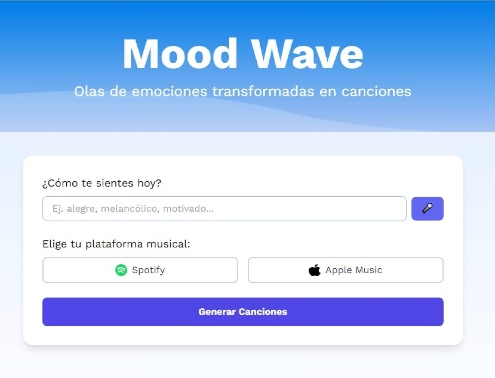
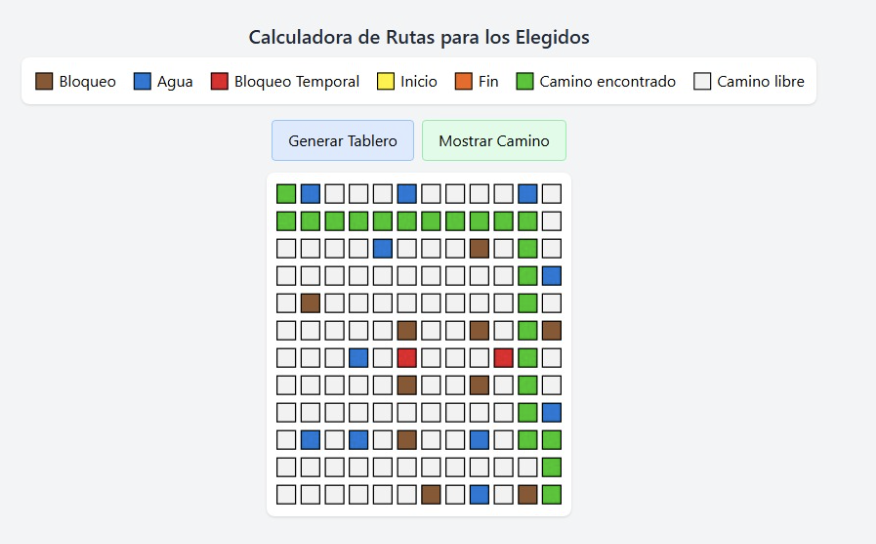

Sobre mí
Actualmente me estoy capacitando en el desarrollo web, con enfoque en proyectos frontend. Me interesa todo proyecto que me desafie a crear experiencias interactivas, accesibles y que sean adatapbles para el usuario.
Experiencia en TI
Hoy en dia estoy realizando un BootCamp de la mano de Penguin Academy. A su vez me estoy capacitando en un diplomado impartido por la Facultad Politecnica de la Universidad Nacional de Asunción, que se divide en los siguientes cursos:
- Gestion de base de datos - Marzo 2025
- Gestion de Proyectos - Marzo 2025
- Front-End I (HTML, CSS) - Cursando
- Front-End II (JavaScript, React)- Cursando
- Integración Back-End (Basado en Node.js)
Proyectos destacados
-
Mood Wave: Un proyecto el cual se realizo pensando en enlazar la Inteligencia Artificial (Chat GPT) con spotify por medio de una de sus APIs y hacerla interactiva generando distintas playlist.
Las tecnologías involucradas fueron Python, JavaScript, HTML, Tailwind, CSS y Flask para generar la los que seria el diseño del Front con la funcionalidad del Back, también se exploraron la utilización de APIs ya mencionada anteriormente.
 -
The Huddle - Calculadora de Rutas:
Un proyecto el cual involucra algoritmos de búsquedas con una visualización en forma de tablero, representando un mapa con obstáculos.
Para el desarrollo de este proyecto se utilizo las tecnologías como JavaScript, HTML y Tailwind.
